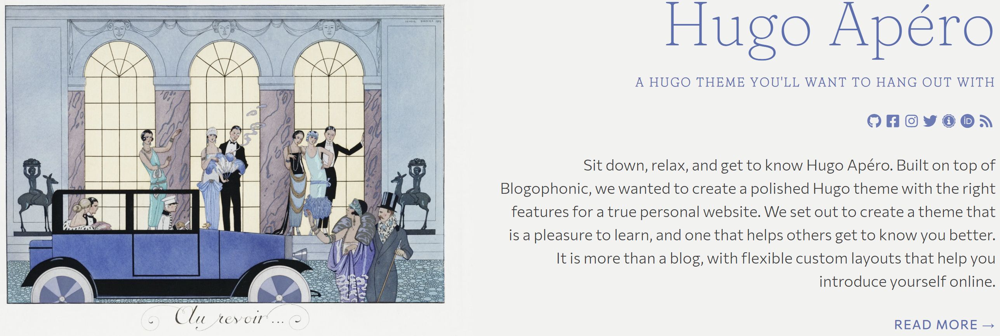
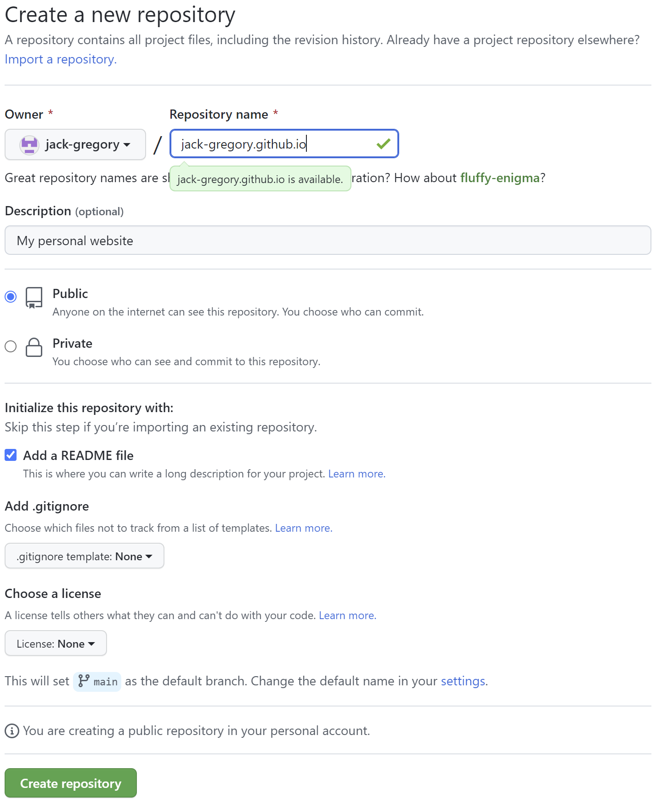
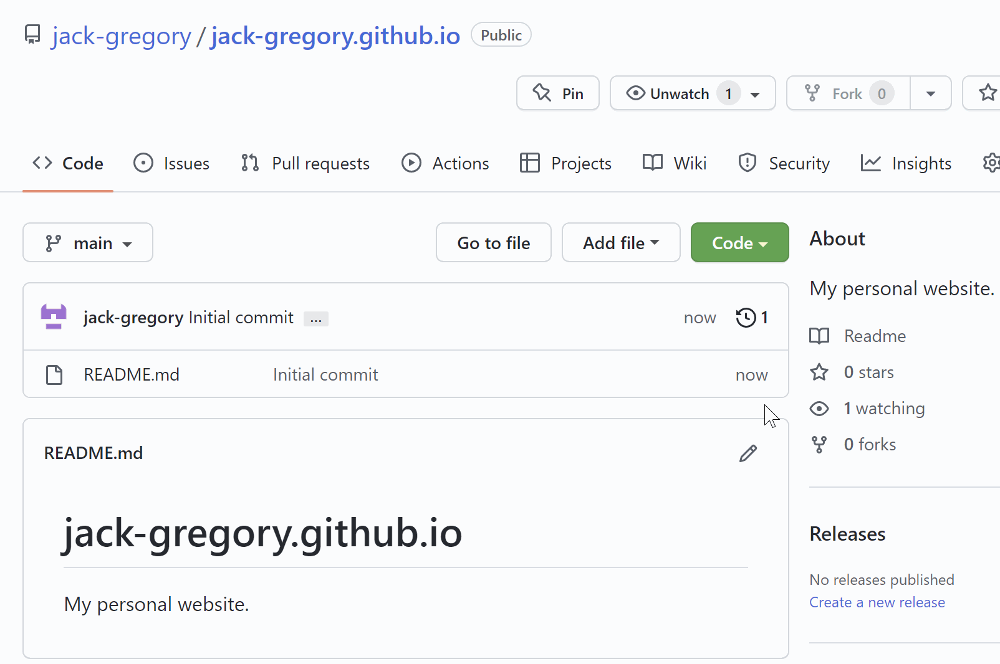
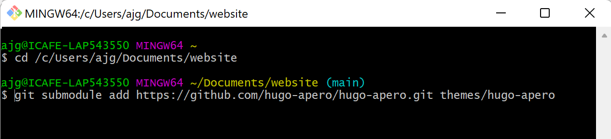
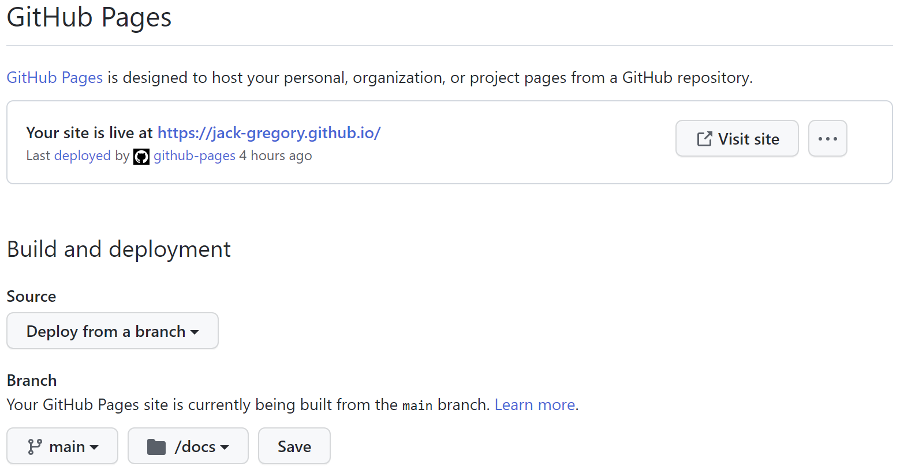

How to setup hugo-apéro on GitHub Pages ...
... with submodules
August 29, 2022

TL;DR
In this blog, I summarize the steps necessary to adapt the deployment of a Hugo-Apéro website to GitHub Pages. I also discuss how to use git submodules to and include a theme dynamically.
Introduction
Hugo-Apéro is a Hugo theme for publishing websites using the blogdown package within R. In fact, it’s what I’m using to publish my personal site here!
Even if you’ve never used Hugo or blogdown previously, the setup is fairly straightforward. The steps outlined in the “ Get Started” blog series by creator Alison Hill are an excellent place to start. The series describes how to build a blogdown website in six steps:
- Set up;
- Create your site;
- Site configuration;
- Deploy your site;
- Section configuration; and,
- Page configuration.
For the most part, I followed the instructions laid out in the blog series above. However, I did make a couple of small modifications in steps 2 and 4. The remainder of this blog will dive into those modifications, namely:
- To deploy the site on GitHub pages instead of Netlify; and,
- To use git submodules to include the theme dynamically.
Create GitHub repository
The Hugo-Apéro setup instructions recommend publishing your site using Netlify. This is a great option; however, my personal preference is to keep everything within the GitHub universe. To do so, there are a number of small modifications necessary to the recommended setup.
The first change is to create a repository on GitHub, but make sure to use the following naming convention: [username].github.io, where “[username]” is replaced with your GitHub handle.
Create a new repository on GitHub from https://github.com/new:
-
Name the repo
[username].github.iounder your account and replace “[username]” with your actual GitHub handle ignoring brackets. -
Make the repository “public”.
-
Check to initialize with a
README.mdfile. -
Don’t add a
.gitignorefile asblogdownwill handle this later.

Create site
Once this is complete, create a new version-controlled RStudio project by cloning the GitHub repository you just created.
-
From the main page of your new repository, click the green “Code” button and copy the HTTPS remote URL by clicking the clipboard icon.
-
Open RStudio and create a new project by clicking Click “File”
\(\rightarrow\)“New Project”\(\rightarrow\)“Version Control”\(\rightarrow\)“Git”. -
Paste the copied URL from the previous step.
-
If desired, change the “Project directory name” to something more descriptive. Note that this step is skipped in the corresponding gif.
-
Click “Create Project”.

In the new RStudio project, use the
blogdown::new_site function to create a new site skeleton via Hugo. Note that we avoid entering a theme parameter (i.e., theme = NA), such that we can install it manually.
Use blogdown to create a blank Hugo website:
> library(blogdown)
> new_site(theme = NA,
format = "toml",
sample = FALSE,
empty_dirs = TRUE)
― Creating your new site
| Converting all metadata to the YAML format
| Adding netlify.toml in case you want to deploy the site to Netlify
| Adding .Rprofile to set options() for blogdown
― The new site is ready
○ To start a local preview: use blogdown::serve_site(), or the RStudio add-in "Serve Site"
○ To stop a local preview: use blogdown::stop_server(), or restart your R session
► Want to serve and preview the site now? (y/n)
We are asked:
► Want to serve and preview the site now? (y/n)
Select n as we have yet to add any content.
Add hugo-apero submodule
Creating a git submodule is essentially adding a repository within a repository. Here we need to add
hugo-apero to the /themes/ folder.
The steps described below are based on the blog “ How to Utilize Submodules within Git Repos” by Paige Niedringhaus. The documentation on git submodules is also a useful resource.
To add a new submodule to an existing project, open Git Bash, navigate to the project and, in the terminal, enter the following command ignoring brackets:
$ git submodule add [project URL] [folder name]
The “[project URL]” is the URL of project we wish to add (i.e. submodule), while the “[folder name]” is the name of the submodule directory we wish to see in the existing project (i.e. main repository). By default, submodules add the subproject into an eponymous directory in the project’s root directory. It is possible to use a different path by including it at the end of the command.
In our case, the Hugo-Apéro theme should be added under the /themes/ subfolder.
Create a hugo-apero submodule
-
Open Git Bash and navigate to your website project.
-
Enter the following line of code in the terminal, ensuring that the subproject is added under the
/themes/subfolder:
$ git submodule add https://github.com/hugo-apero/hugo-apero.git themes/hugo-apero

Note that, in this picture, my local website repository is under the name “website” instead of “jack-gregory.github.io”.
Once, we’ve added the Hugo-Apéro submodule, we need to copy the following files and folders to the appropriate locations within the website repository:
/themes/hugo-apero/assets/\(\longrightarrow\)/assets/;/themes/hugo-apero/exampleSite/config.toml\(\longrightarrow\)root directory;/themes/hugo-apero/exampleSite/content/\(\longrightarrow\)root directory; and,/themes/hugo-apero/exampleSite/layouts/\(\longrightarrow\)root directory.
This is necessary, since we did not include a theme when we created the site.
At this point, we should now have a few new elements in our “website” repository. Let’s take a closer look at each of them.
| Path | Type | Description |
|---|---|---|
/.gitmodules |
file | A configuration file with the mapping between submodule project URLs and their local subdirectory. |
/themes/hugo-apero/ |
folder | The hugo-apero submodule containing the Hugo-Apéro theme. |
/config.toml |
file | File copied from the hugo-apero submodule defining the Hugo website configuration. |
/assets/ |
folder | Folder copied from the hugo-apero submodule. |
/data/ |
folder | Folder copied from the hugo-apero submodule. |
/layouts/ |
folder | Folder copied from the hugo-apero submodule. |
Publish to GitHub Pages
Now that we have our website setup locally, we can proceed to publishing it through GitHub Pages. The steps outlined in this section are based on the “ GitHub Pages” chapter within the Creating Websites with R Markdown book by Yihui Xie.
Edit .RProfile
Instead of GitHub publishing our website from the root directory, we would like it to do so from a subdirectory. Since, the only two options are to publish from the root or a /docs/ subdirectory, we must rename /public/ to /docs/.
Next, to ensure that the site is built in the /docs/ folder, we must add the following line of code to the .RProfile file in the root of the website repository.
> options(blogdown.publishDir='docs')
Finally, save .RProfile and restart the R session for the changes to take affect.
Add .nojekyll
To ensure GitHub does not rebuild our website using Jekyll, we need to create a (hidden) file named .nojekyll in the /docs/ folder.1 This can be done by running the following line of code in the R console:
> file.create("docs/.nojekyll")
Build the website
Build the website locally using Hugo by running the following line of code in the R console:
> blogdown::build_site()
This should populate the /docs/ folder with the static website.
Push changes to GitHub
We can directly push our website to GitHub by running the following commands in Git Bash:
$ git add .
$ git commit -m "Publish website"
$ git push origin HEAD
This will add all changes and submodules to the remote “website” repository.
Edit GitHub Pages settings
Finally, we need to adjust a few of the repository settings to ensure the website is properly published to GitHub pages.
Adjust some repository settings:
-
Navigate to Settings
\(\rightarrow\)Pages. -
Under “Build and deployment”:
-
Change “Source”
\(\longrightarrow\)“Deploy from branch”; -
Change “Branch: Branch”
\(\longrightarrow\)“main”; and, -
Change “Branch: Select folder”
\(\longrightarrow\)“/docs”.
-
-
Click save.

The website should now be published online at the following link: “https://[username].github.io/”, where “[username]” will be replaced with your GitHub handle.
Workflow summary
From this point, my workflow in RStudio is outlined in the following steps:
-
Open the RStudio project for the site.
-
Start the Hugo server using
blogdown::serve_site(). -
View the site in the RStudio viewer pane, and open it in a web browser using the “Show in a new window” button.
-
Edit and/or create content using RStudio.
-
After making changes, save the respective files to preview them. Subsequently, the console will detect the change, the viewer pane will update, and the web browser will also refresh.
-
When satisfied with the changes, build the website locally by running
blogdown::build_site(). -
Add, commit and push changes to the “website” remote repository, including the built site in the
/docs/folder. From Git Bash and within the “website” repository, use the following code:2$ git add . $ git commit -m "Content updates" $ git pull $ git push
So, there we go. We now have our Hugo-Apéro website published to GitHub pages!
-
Further details and explanation can be found in the git submodules documentation. ↩︎